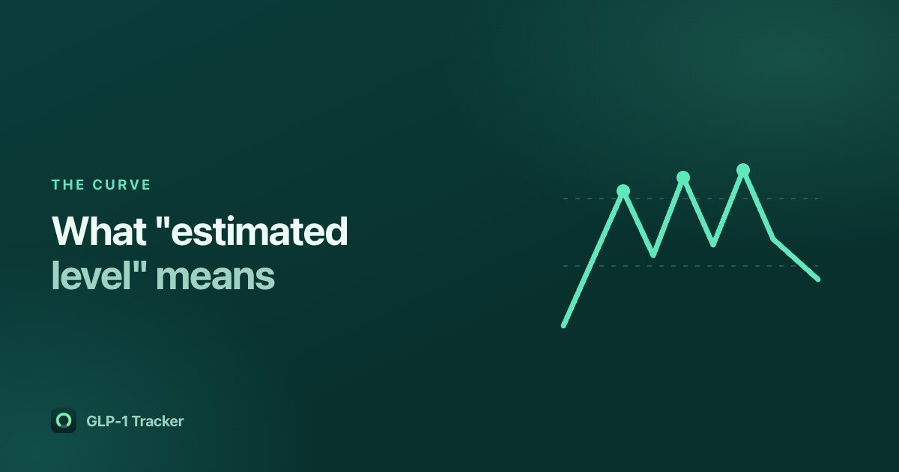

What an 'estimated level' chart is, and what it is not

It is the feature people in this category like most, and the one most likely to be misread. A curve showing medication "in your system" looks like a measurement. It is not one. It is arithmetic on the dates you typed in.
The arithmetic
Every one of these curves is built from one idea: a drug leaves the body at a rate proportional to how much is left, so the amount remaining halves over a fixed period. That period is the half-life, and for the branded GLP-1 medications it is published in the FDA prescribing information — section 12.3, the same document your pharmacist works from. Semaglutide's is about a week, which is why those products are weekly.
From that, the contribution of a single dose at any later moment is:
remaining = dose × 2−(time since dose ÷ half-life)
and the curve is the sum of that across every dose you have logged. That is the whole model. It is a single-compartment decay, the simplest pharmacokinetic model there is.
What it is genuinely good for
- Seeing the accumulation. If you dose weekly and the half-life is about a week, you are injecting before the previous dose has cleared. The curve makes the ramp-up over the first several weeks visible, which surprises people.
- Making sense of the shape of a week. Plenty of people notice that days two and six feel different. A decay curve is a reasonable thing to hold that observation against.
- Seeing what a missed or late shot did. The dip is obvious.
What it is not
It is not a blood level. Nothing in your phone is measuring anything. We label ours "Estimated level" everywhere, never "blood level", and we put a footnote under every chart saying it is a simplified estimate based on published half-life, that individual results vary, and that it is not a medical measurement. That is not legal throat-clearing; a curve drawn confidently invites decisions it cannot support.
Specifically, the model ignores absorption — it treats a dose as arriving instantly, when in reality it enters over hours — as well as individual variation in clearance, body weight, kidney function, and everything else a real pharmacokinetic model accounts for. The published half-life is a population figure, not yours.
And the thing it must never be used for: deciding what to inject or when. A curve is not a reason to move a dose. That decision belongs to your prescriber, every time.
Where it stops being meaningful at all
Compounded semaglutide and tirzepatide have no published half-life, because the compound is not a published product. Any app drawing a confident curve for a compounded vial is applying a number it does not have. Ours draws the curve — people find the shape useful — but says plainly in the footnote that this medication has no published half-life and the curve is a rough illustration only. An estimate presented as if it were sourced is worse than no estimate.
Why ours is free
The clearest single finding from reading 4,313 reviews in this category was how often people complain about paying for the feature they came for. From the highest-rated app in the category, more than once:
"The free version doesn't contain the most useful thing about the app, which is the estimated medication levels."
Ours is in the free tier, along with unlimited logging, the full offline food database and barcode scanning, injection site rotation and reminders. No account.
Get GLP-1 Tracker on the App Store
Common questions
Is an estimated medication level chart a blood level?
No. Nothing in a phone measures anything in your body. The curve is arithmetic applied to the doses and dates you logged, using the half-life published in the medication's prescribing information. It is an estimate, individual results vary, and it is not a medical measurement.
How is the estimated level calculated?
Each dose decays by half every half-life, so its remaining contribution is dose × 2^(−time since dose ÷ half-life), and the curve is the sum across every dose logged. It is a single-compartment decay model and ignores absorption time and individual variation.
Does the chart work for compounded semaglutide?
Only as a rough illustration. Compounded products have no published half-life because they are not published products, so any app drawing a confident curve for one is using a number it does not have. GLP-1 Tracker says so in the footnote rather than implying a source it does not have.